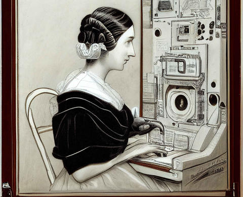

Ada Lovelace was orn on December 10th 1815 in London England. She sadly passed away from uterine cancer on November 27th 1852 in London England.
She was an only child raised by her mother, Lady Anne Isabelle Noel Byron. Her father, Lord Gerorge Byron, left just 2 months after Ada was born. Ada had a half sibling named Allegra Byron. On July 8th of 1835 Ada married William King. On May 12th in 1836 They had their first child Byron Noel King named afer her father. On september 22nd in 1837 they had their second child Anne Isabella King. Their youngest child was named Ralph Gordon Noel King born on July 2nd in 1839.
Ada Lovelace accomplished many things in her time. Although it was never physicaly built she is well know for writin the program for the Analytical Engine. She worked along side of inventor and mathematician, Charles Babbage. She mentored with him while he was building the Difference Engine and she then wrote the programs for the analytical engine. Above all she is considered the first computer programmer
